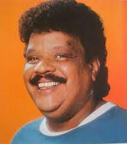

Tim Maia, o pai da soul music brasileira
No dia 15 de março de 1998, após passar sete dias internado no Hospital Universitário Antônio Pedro, para onde foi levado depois de passar mal no começo de um show no Teatro Municipal de Niterói, morria o cantor, compositor e instrumentista Sebastião Rodrigues Maia, o indomável Tim Maia, aos 55 anos, vítima de complicações cardiovasculares.
Sua vida foi reflexo de sua personalidade hiperbólica, intensa, divertida e ao mesmo tempo dramática. Caçula de 12 irmãos, nascido no bairro da Tijuca (Rio de Janeiro/RJ), em 1942, sua relação com a música e as composições iniciou-se precocemente. Já aos sete anos escrevia suas primeiras letras.
Em 1956, formou seu primeiro conjunto musical Os Tijucanos do Ritmo. No ano seguinte, aos quinze de idade, montou com Roberto Carlos, Edson Trindade (autor da música Gostava tanto de você), Wellington Oliveira e Arlênio Lívio (que viria a integrar o grupo Renato e seus Blue Caps) o grupo vocal The Sputinks, chegando a se apresentar no programa Clube do Rock, de Carlos Imperial. Esses garotos, juntamente com Erasmo Carlos, Jorge Ben e José Roberto, o China, faziam parte da turma do Bar do Divino, onde se reuniam para escutar e cantar rock’n roll.
No fim dos anos 1950, foi viver nos Estados Unidos. Lá, conheceu a soul music. Chegou a gravar com um grupo americano, The Ideals. Morou inicialmente em Tarrytown, trabalhando em lanchonetes, e posteriormente em Nova Iorque, mas após decidir viajar mais três amigos pelo sul do país, realizando pequenos furtos como forma de financiar a excursão, findou sendo preso na Flórida, por porte de maconha, e deportado para o Brasil, em 1964.
De volta às terras cariocas, Tim Maia se deparou com o sucesso de seus amigos da turma do Bar do Divino. Isso, contudo, não significou acesso facilitado ao mainstream da nascente indústria fonográfica brasileira. Tim teve que se submeter a alguns padrões estéticos para participar dos programas televisivos da Jovem Guarda. Por outro lado, atuando como arranjador e produtor de alguns álbuns e cedendo composições para Roberto e Erasmo Carlos, se tornou o responsável por introduzir a levada da soul music para o Iê-iê-iê.
Após 4 anos vivendo nos bastidores da música, Tim Maia lança seu primeiro trabalho solo, um compacto simples (disco composto apenas por duas faixas), em 1968, pela CBS. O sucesso, todavia, só chega dois anos depois com a gravação de seu primeiro LP. Intitulado simplesmente de Tim Maia, o disco traz algumas canções que se tornaram clássicos do que é conhecido como música popular brasileira: Azul da cor do mar, Primavera e Coronel Antônio Bento.
Outros três discos homônimos foram lançados nos anos seguintes, alçando o nome de Tim Maia, que emplacava novos sucessos a cada lançamento, como Gostava tanto de você, Não quero dinheiro e Réu confesso, ao posto destinado apenas aos grandes artistas.
Por trás e para além de sua voz potente, capaz de atingir notas graves, bem como agudas, por meio de falsetes, do groove e do swing de suas batidas que oscilavam entre baladas e sons frenéticos, bem como do teor dramático ou desbundado de suas composições, Tim Maia inaugurava o que ficou conhecido como a moderna música negra brasileira. Juntamente com Cassiano, Banda Black Rio e Hyldon, Tim construiu um novo espaço para o negro na música brasileira, dissociando-o do samba, o que até a década de 1960 era praticamente sua única via de expressão musical.
Em meados da década de 1970, Tim se envolveu com a Cultura Racional, doutrina criada por Manuel Jacinto Coelho, e embebido em seus dogmas lançou dois álbuns conhecidos como Tim Maia Racional (volume I e II). Embora essas obras tivessem, à época, basicamente o papel de disseminar a seita que prometia a imunização racional, por meio de letras de teor essencialmente doutrinário, os discos são considerados verdadeiras obras-primas.
O fato de ter parado de fumar, beber e consumir outras substâncias psicoativas, fez com que sua voz atingisse uma qualidade ímpar. Para muitos críticos e admiradores, os dois álbuns captam suas melhores performances. Aliado a isso, os arranjos da “fase racional” tinham uma marcante pegada soul e funk.
Foi também neste período que Tim Maia criou o seu próprio selo, o Seroma, inverso da palavra amores e abreviação de seu próprio nome de registro. Vale registrar ainda, que o lançamento do Tim Maia Racional Vol. I coincidiu com o nascimento de seu filho Carmelo Maia.
Assim como entrara “de cabeça” na Cultura Racional, o pai da soul music brasileira largou repentinamente os ensinamentos do mestre Manuel e voltou às músicas seculares e à sua vida de excessos.
O final da década de 1970, abrigou o álbum Tim Maia Disco Club, em que, aproveitando a febre da disco music, Tim gravou dois de seus maiores sucessos, Acenda o farol e Sossego.
A década de 1980 foi marcada pela consolidação de seu nome entre os grandes artistas brasileiros. Inúmeras músicas atingiram as primeiras posições nas rádios de todo o país: Do Leme ao Pontal, Vale tudo, Descobridor dos sete mares. Grandes duetos foram registrados, como os com Gal Costa, Roberto Carlos, Jorge Ben Jor e Sandra de Sá. Tim também selou parcerias bem-sucedidas, a exemplo da celebrada com os compositores Michael Sullivan e Paulo Massadas, autores de Me dê motivo e Um dia de domingo.
Como ao longo da carreira, acumulou inimizades e disputas judiciais com as grandes gravadoras, na década de 1990 retomou o projeto da editora Seroma e da gravadora Vitória Régia Discos, passando a ser um dos primeiros artistas do mainstream a aderir ao movimento de música independente. Nesse período, Tim Maia passou a ser regravado por músicos e bandas da nova geração, como Marisa Monte, Paralamas do Sucesso e Titãs.
Em 1993, o grande frontman da música tupiniquim volta às paradas de sucesso por meio da regravação de Como uma onda (Lulu Santos/ Nelson Motta) e por uma inusitada homenagem feita por seu amigo Jorge Ben Jor no refrão da música W/Brasil, em que lhe apelida de Síndico do Brasil.
Passou a gravar freneticamente, chegando a lançar 5 discos no ano de 1997, mostrando toda sua versatilidade ao interpretar desde funk, bossa nova e soul a standarts americanos e hinos de clubes cariocas de futebol.
Tendo acumulado vários problemas de saúde, decorrentes do uso exagerado de drogas lícitas e ilícitas, além do excesso de peso, Tim Maia, ganhador por seis vezes do Prêmio da Música Brasileira na categoria melhor cantor, se despediu dos palcos e da vida no apagar das luzes do século XX, por coincidência ou não, também chamado de O Século dos Extremos.
Não obstante, seu nome e sua obra continuam a ecoar por meio de homenagens, tributos, regravações e na memória e ouvidos de milhões de brasileiras e brasileiros.
Além de Carmelo, responsável pelo acervo da Vitória Régia Discos e detentor dos direitos autorais do pai, Tim deixou outros dois filhos, José Carlos da Silva Nogueira e o cantor Léo Maia.
A vida desse genial artista foi contada por Nelson Motta, no livro de Vale Tudo: o som e a fúria de Tim Maia (2007), que se tornou base para o filme de Mauro Lira, Tim Maia: não há nada igual, lançado em 2014.